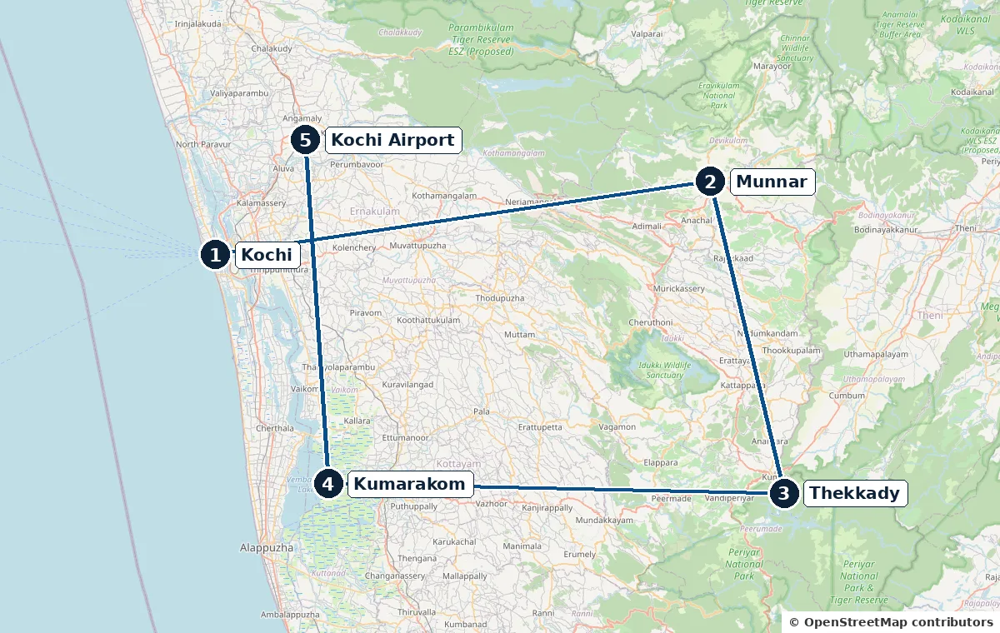
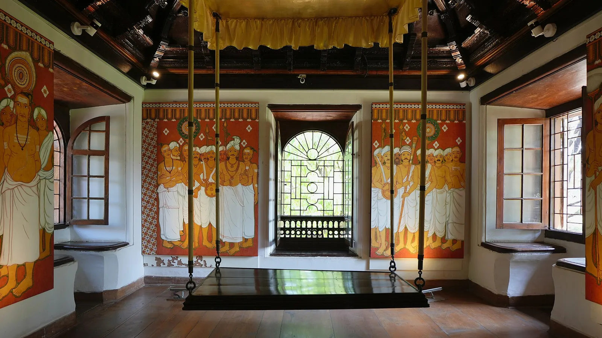
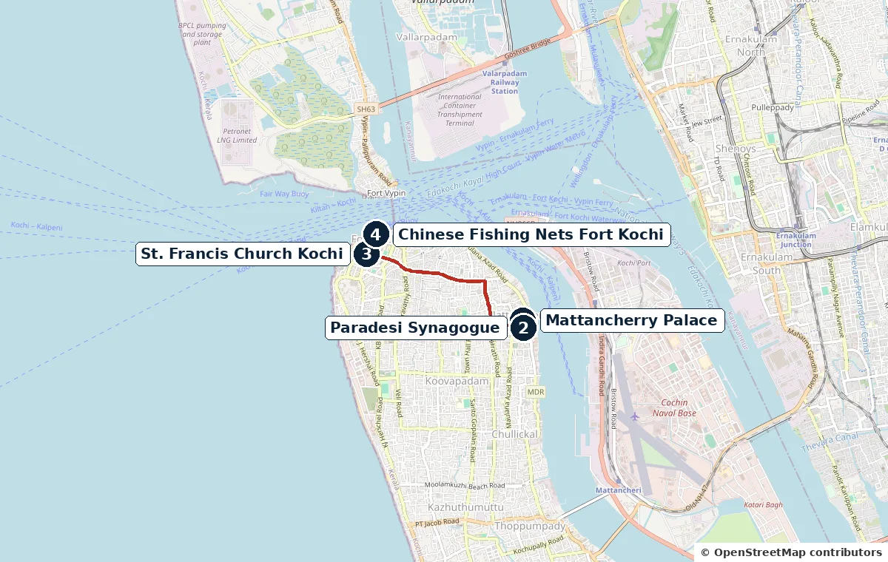
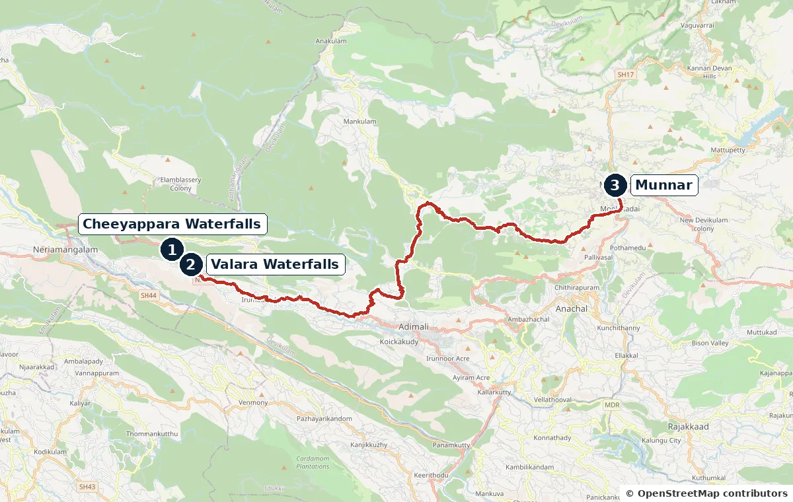
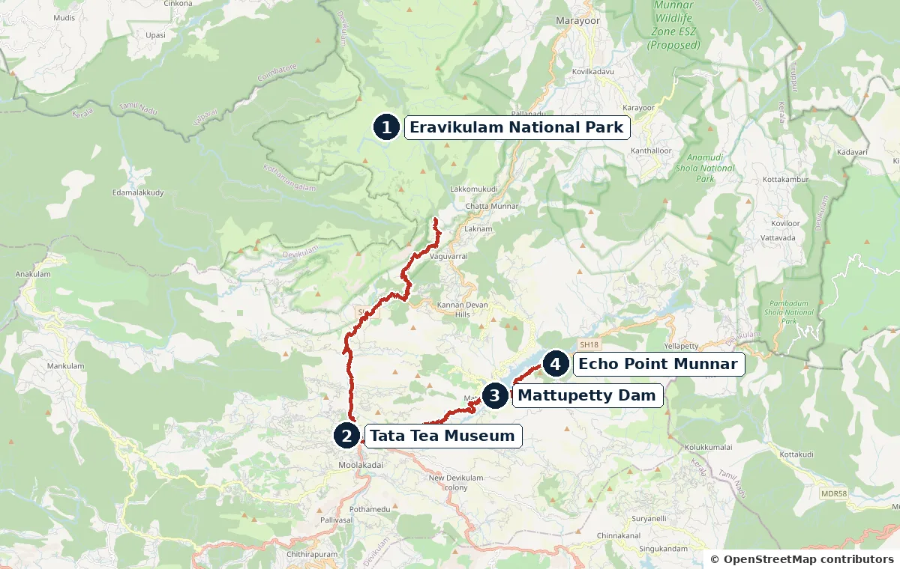
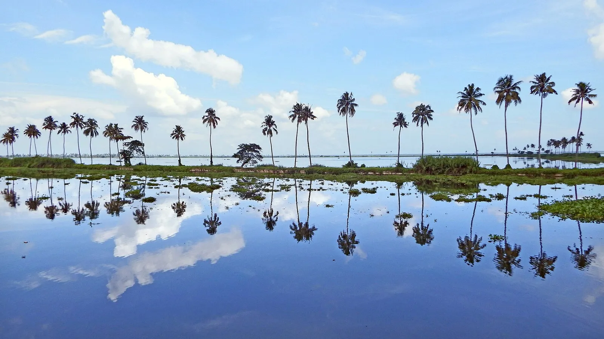
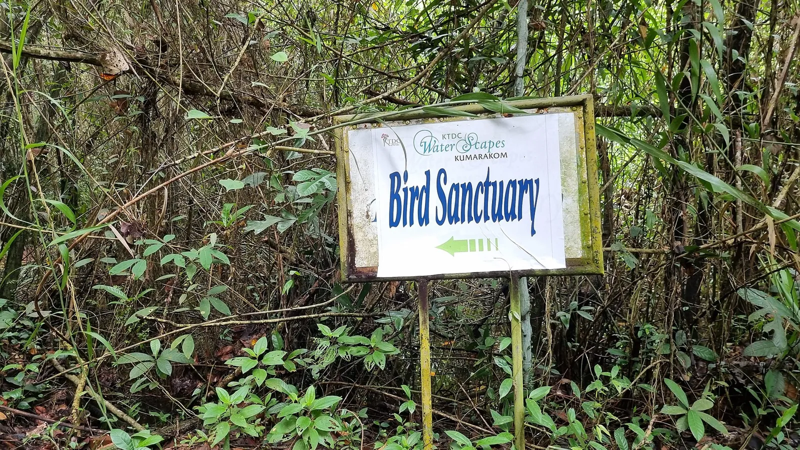
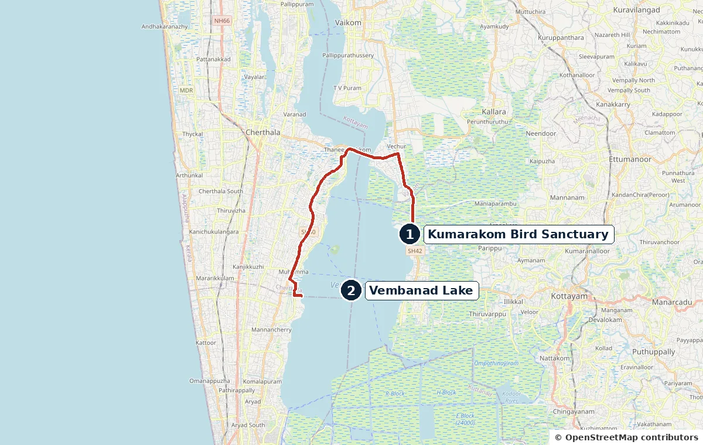
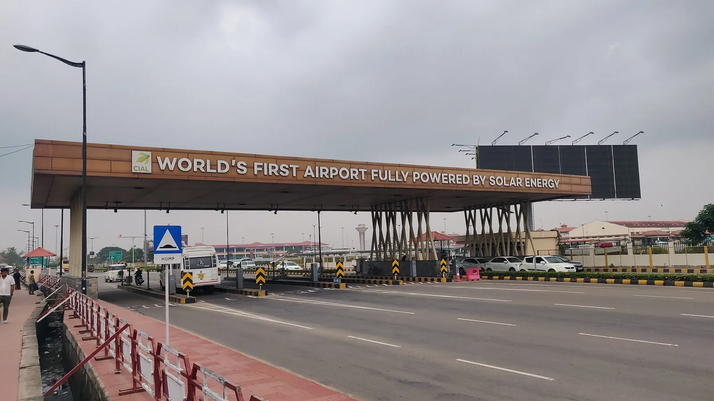

The Kerala everyone dreams of, in a comfortable loop from Kochi. Start with the spice-trade lanes of Fort Kochi, climb to the tea estates of Munnar, look for elephants on Periyar Lake at Thekkady, and finish with two slow days on the backwaters of Kumarakom. We fixed the original plan, which named Kovalam on the last day: the return is to Kochi airport, about two and a half hours from Kumarakom.
Trip highlights
- Chinese fishing nets, St Francis Church, Mattancherry Palace and Jew Town in Fort Kochi
- Cheeyappara Falls on the road to Munnar
- Eravikulam National Park and the Nilgiri tahr
- Mattupetty Dam, Echo Point and tea estates in Munnar
- Periyar Lake boat ride and a spice plantation walk in Thekkady
- Kumarakom Bird Sanctuary and a sunset on Vembanad Lake
Your week at a glance
- Day 1Land in Kochi and walk Fort KochiArrival day
- Day 2Up to Munnar past Cheeyappara FallsTransfer day
- Day 3Eravikulam, Mattupetty and the tea hillsFull day
- Day 4Through cardamom hills to ThekkadyTransfer day
- Day 5Periyar Lake, spices and the forestFull day
- Day 6Down to the backwaters at KumarakomTransfer day
- Day 7Birds, canals and a sunset on Vembanad LakeEasy day
- Day 8Kumarakom to Kochi airportDeparture

Route: Kochi » Cheeyappara Falls » Munnar » Thekkady » Kumarakom » Kochi Airport
Day-by-day itinerary
Land in Kochi and walk Fort Kochi

- Airport to Fort Kochi about 1 hour 30 minutes
- Sunset about 18:15
On landing · Kochi airport (COK)
Meet your driver
With a name sign at arrivals.
Afternoon
Mattancherry Palace and Jew Town
Murals of the Ramayana in the Dutch Palace, then the antique shops and the Paradesi Synagogue of 1568.
TIMEMattancherry Palace is closed on Fridays. The synagogue is closed on Fridays, Saturdays and Jewish holidays.
Evening
St Francis Church and the Chinese fishing nets
Vasco da Gama was first buried in this church. Watch the nets being lowered at sunset.
TIMESt Francis Church does not take visitors during Sunday services.
Optional · 18:00
Kathakali performance
Watch the actors put on their make-up from about 17:00, then an hour of the story.

Today's route
- Mattancherry Palace
- Paradesi Synagogueabout 0 km by road
- St. Francis Church Kochiabout 2 km by road
- Chinese Fishing Nets Fort Kochiabout 0 km by road
On the mapMattancherry PalaceParadesi SynagogueSt. Francis Church KochiChinese Fishing Nets Fort Kochi
Up to Munnar past Cheeyappara Falls

- About 130 km, 4 hours
- Munnar about 1,600 m
Morning
Leave Kochi after breakfast
East through Kothamangalam into the hills.
Midday
Cheeyappara and Valara falls
Seven-step falls right on the highway near Adimali.
Afternoon
Tea estates into Munnar
Check in and an evening walk.

Today's route
- Cheeyappara Waterfalls
- Valara Waterfallsabout 2 km by road
- Munnarabout 43 km by road
Eravikulam, Mattupetty and the tea hills

- Eravikulam closed about February to March
- Drives about 3 hours in total
About 08:00
Eravikulam National Park (Rajamala)
A forest bus takes you up to the grasslands where the Nilgiri tahr grazes near the road.
TIMEClosed for the tahr calving season, usually February to March. Book tickets online in advance in peak season.
Midday
Tata Tea Museum
How tea is processed, with a working factory unit.
TIMEClosed on Mondays.
Afternoon
Mattupetty Dam, Echo Point and Kundala Lake
Speed boats and pedal boats, and the Indo-Swiss dairy farm.
Optional
Photo Point and Pothamedu viewpoint
Tea, coffee and cardamom slopes below.

Today's route
- Eravikulam National Park
- Tata Tea Museumabout 21 km by road
- Mattupetty Damabout 12 km by road
- Echo Point Munnarabout 6 km by road
On the mapEravikulam National ParkTata Tea MuseumMattupetty DamEcho Point MunnarKundala Lake
Through cardamom hills to Thekkady
- About 90 km, 3 hours
- Thekkady about 900 m
Morning
Lockhart Gap viewpoint
Mist and a long view down the valley on the way out.
Afternoon
Arrive Thekkady
Check in near Kumily.
Evening
Kalaripayattu show
Kerala's martial art, about an hour, in Kumily.
On the mapLockhart GapKumily
Periyar Lake, spices and the forest
- Boat at 07:30, 1 hour 30 minutes
- Tickets sold at the counter only
About 07:00 be early
Periyar Lake boat ride
Elephants, gaur and sambar come down to the water. The first boat is the best for wildlife.
TIMETickets are sold at the boat landing or online through the forest department and sell out by about 07:00 in peak season.
Late morning
Spice plantation walk
Pepper, cardamom, nutmeg, cinnamon and vanilla, with the farmer's family.
Optional
Jeep safari or bamboo rafting
Forest department eco-tourism programmes, booked a day ahead.
On the mapPeriyar Lake Boat LandingThekkady Spice Plantation
Down to the backwaters at Kumarakom

- About 130 km, 4 hours
Morning
Through rubber plantations to Kottayam
The road drops from the hills to the paddy country.
Afternoon
Kumarakom lake resort
Free to swim, take an Ayurvedic massage or sit by the lake.
On the mapKumarakom
Birds, canals and a sunset on Vembanad Lake

- Bird sanctuary from 06:00
- Cruise about 2 to 3 hours
About 06:30
Kumarakom Bird Sanctuary
A path through mangroves and canals; best for birds between November and February.
Afternoon
Shikara or day houseboat cruise
Through narrow canals and out onto Vembanad Lake for sunset.
TIPIn October, water lilies carpet the paddy canals around Kumarakom.

Today's route
- Kumarakom Bird Sanctuary
- Vembanad Lakeabout 21 km by road
On the mapKumarakom Bird SanctuaryVembanad Lake
Kumarakom to Kochi airport

- About 85 km, 2 hours 30 minutes
After breakfast
Drive to Kochi airport (COK)
Through Kottayam and Ernakulam.
TIMELeave 5 hours before an international flight, 4 before a domestic one.
On the mapCochin International Airport
Where you stay
Hand-picked resorts at each stop
We choose heritage hotels in Fort Kochi, tea-estate resorts in Munnar, spice-garden resorts in Thekkady and lakeside resorts in Kumarakom, at the level you prefer.
What's included
- 7 nights in the resorts listed or similar
- Daily breakfast
- Private air-conditioned car for all transfers and sightseeing
- 24/7 support from Blue Diamond Voyage
Not included
- Flights
- Entry fees, boat rides, shows and safaris
- Houseboat upgrade
- Lunches and dinners
- Travel insurance
Visa, entry and phones
| Permit | What it is | Who | Cost |
|---|---|---|---|
| Photo ID | Aadhaar, passport, driving licence or voter ID for flights, trains and hotel check-in | Indian citizens | — |
| Indian e-Visa | Tourist e-Visa applied online before travel | Foreign nationals (not OCI holders) | Varies by nationality |
| Monument tickets | Most ASI monuments sell tickets online and by UPI at the gate | Everyone | About INR 20 to 50 for Indians, more for foreigners |
- Carry the original photo ID, not a photocopy. Security at airports and many temples checks it.
- Phone and internet: Jio and Airtel work best across most of this route. Download offline Google Maps before hill or forest stretches, where signal drops.
NOTEWhen you book, we arrange the paperwork with you and share every document on your trip's WhatsApp group before departure.
Good to know
UPI, cards and cash
UPI works almost everywhere, even at small stalls. Keep some cash in INR 100 and 200 notes for temples, parking, tips and places where the network is weak.
Temple and shrine etiquette
Cover shoulders and knees. Remove shoes where asked, and carry socks for hot stone floors. Leather belts and bags are not allowed inside some Jain and Hindu temples. Ask before photographing people and inside shrines.
Water and street food
Drink sealed bottled or filtered water only. Choose busy stalls where food is cooked in front of you, and skip cut fruit and ice from roadside stalls.
Driving times
Indian roads are slower than the kilometres suggest: plan on 40 to 50 km an hour on highways and much less in hills and towns. Your driver's breaks and meal stops are built into the timings.
Plugs and tipping
Plugs are Indian three-pin and two-pin, 230 volts. Tipping drivers and guides about INR 300 to 500 a day is appreciated.
In an emergency
All emergencies (India) 112 (police 100, ambulance 108)
Tourist helpline 1363 (Ministry of Tourism, 24 hours, multilingual)
Blue Diamond Voyage 24/7 +91 98242 21400 and +91 97148 59797
Best time to go
September to March. September and October are green and fresh after the monsoon; December and January are cool and busy. Eravikulam usually closes in February and March for the tahr calving season.
| September to March | Best | About 20° to 32° on the coast, 10° to 22° in Munnar. |
| April to May | Hot | Humid on the coast; Munnar is pleasant. |
| June to August | Monsoon | Heavy rain, Ayurveda season and low rates. |
Frequently asked questions
Can we spend a night on a houseboat?
Yes. We can replace one Kumarakom night with a private houseboat on Vembanad Lake, with all meals cooked on board.
Is Kerala good for Jain or pure-vegetarian travellers?
Yes. Sadya meals are vegetarian, and our hotels prepare Jain food with notice. Coconut oil is used in most cooking; ask for sunflower oil if you prefer.
Can we add Kovalam or Varkala?
Yes. Add two or three nights at Kovalam or Varkala after Kumarakom and fly home from Thiruvananthapuram instead of Kochi.
Can this itinerary be changed for our dates and pace?
Yes. Every Blue Diamond Voyage itinerary is a starting point. We change the number of nights, the hotels, the pace and the activities to suit your family, and send you a personalised quote.
Do you look after vegetarian and Jain food?
Yes. We send your dietary brief to every hotel and guide before you travel, and suggest pure-vegetarian restaurants along the route. Jain meals without onion, garlic and root vegetables can be arranged in most places with notice.
Photo and map credits
- Day 1: Ingo Mehling, CC BY-SA 4.0, via Wikimedia Commons
- Day 2: Ranjithsiji, CC BY 4.0, via Wikimedia Commons
- Day 3: Rainer Halama, CC BY-SA 4.0, via Wikimedia Commons
- Day 6: Rison Thumboor, CC BY-SA 4.0, via Wikimedia Commons
- Day 7: Ganesh Mohan T, CC BY-SA 4.0, via Wikimedia Commons
- Day 8: Ranjithsiji, CC BY-SA 4.0, via Wikimedia Commons
- Maps: © OpenStreetMap contributors; road routes by OSRM. Distances are by road; drive times on this page allow for local traffic.
Make this journey yours
Every Blue Diamond Voyage itinerary is a starting point. Tell us your dates, your city and how you like to travel, and we shape the hotels, the pace and the food around you. Timings and local details were checked on November 2026 and are reconfirmed for your dates when you book.